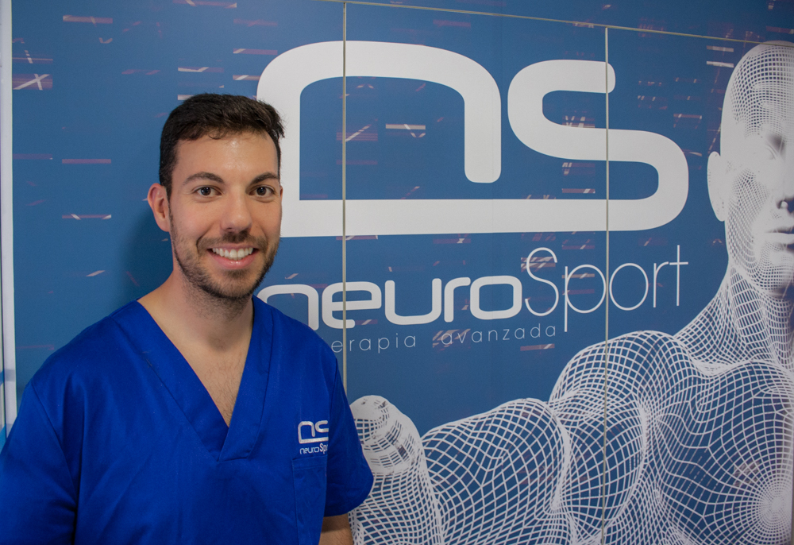
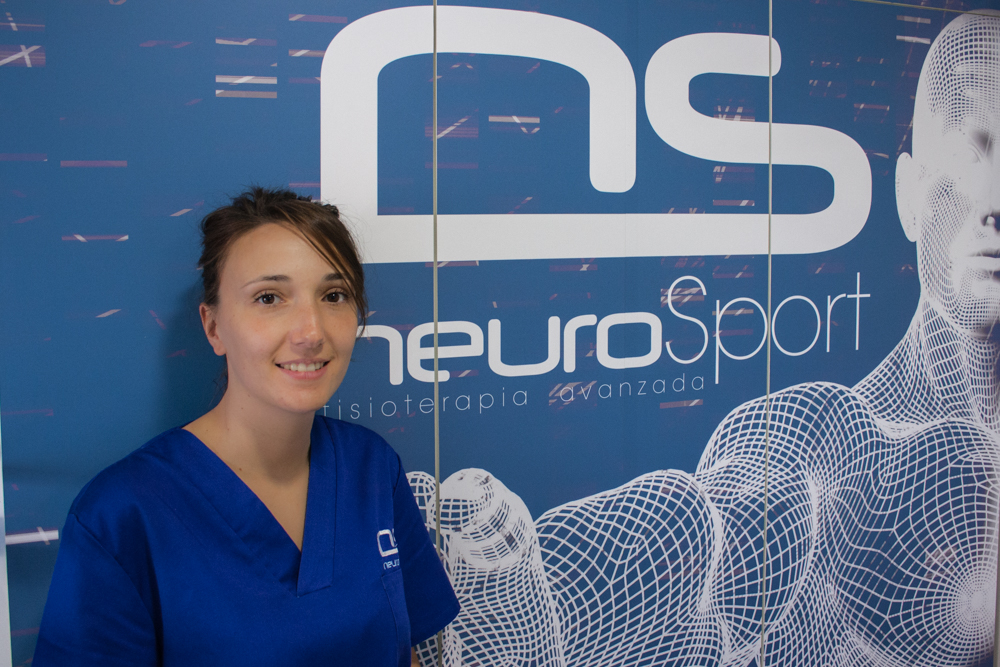

Quiénes somos

La clínica está dirigida por Mariano González Sáez, fisioterapeuta colegiado por el Ilustre Colegio de Fisioterapeutas de Castilla y León con número: CL05-0984.
Miembro de la Asociación de Fisioterapeutas de España con número: 9100.
Cuenta con más de 12 años de experiencia en el tratamiento y asesoramiento privado de pacientes.
- Experto en EPI® (Electrólisis Percutánea Intratisular) nivel II, máxima titulación en España, formado por el creador de la técnica D. José Manuel Sánchez.
- Experto en Terapia Manual Avanzada Neuro-Ortopédica.
- Experto en Mulligan Concept®. Nivel C.
- Experto en Punción Seca, acreditado por David G Simons Academy®. (Academia Oficial de David Simons creador de la técnica Punción Seca).
- Experto en Ecografía Musculoesquelética, formado por CEREDE®.
- Experto en Fisioterapia Deportiva y Fisioterapia Neurológica.
- Experto en Método Kabat, por la Universidad de Salamanca.
- Experto en Tratamiento y abordaje de la Articulación temporomandibular (ATM).
- Experto en Mesoterapia.
- ¡En constante renovación!.

Sheila Pulido Pacheco, fisioterapeuta colegiada por el Ilustre Colegio de Fisioterapeutas de Castilla y león con número: CL 40-2348.
Cuenta con más de 5 años de experiencia en el tratamiento privado de pacientes.
- Experta en Terapia Manual Avanzada Neuro-Ortopédica.
- Experta en Punción Seca, acreditado por David G Simons Academy®.
- Experta en Ecograía Musculoesquelética.
- Experta en Pilates terapéutico. Coordinadora/jefe del servicio de Pilates de la clínica.
- ¡En constante renovación!.